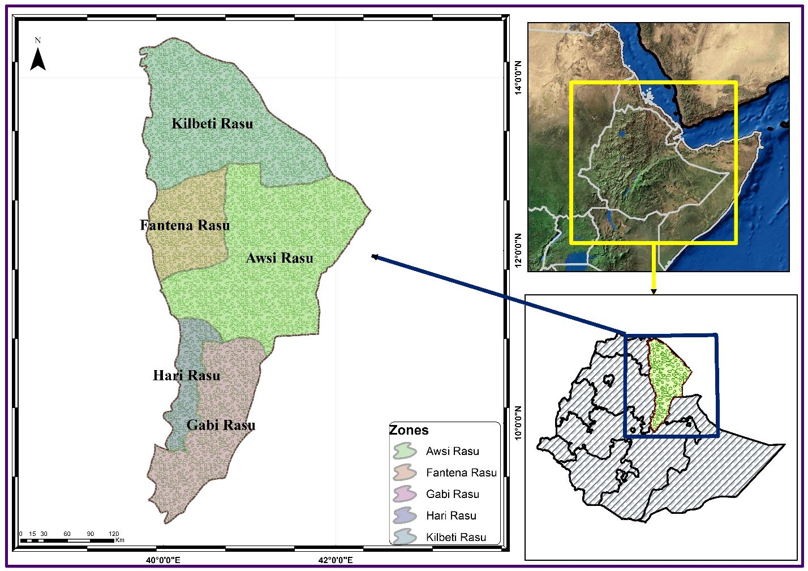
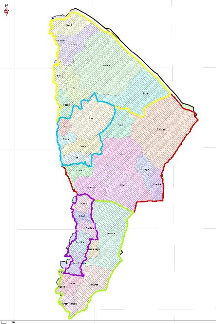

Afar National Regional State
Geographically between 8.83 to 14.56o East and 39.65o to 42.48o North
Appr.Area of 9,964,545.1Ha xApprox. Perimeter of 1887.56 KM
Extends from the central part Of Ethiopia to NE part05 Zones
32 Woredas (1 Special wereda)2 City Admin
The region shares national boundary with
- Oromiya NRS in the sout
- Somali NRS in the south-east
- Tigray NRS in the north-west
- Amhara NRS in the south-west
Physical Boundary

According to proclamation No. 55/2011, Article 17(18), BoFED has a responsibility to prepared
different geographic datasets of the region for sustainable development purpose.
- 6 Wereda with Int. Boundary
- 25 Wereda with Nat. Boundary
- Area= 7,551,299.71Ha/9,964,545.1Ha
- Only Erebti, Teru and Kory are without out national and international boundary
- 1279.39KM length of regional boundary, this includes 25 weredas of the region
- 608.17Km long international boundary with both Eritrea and Djibouti.